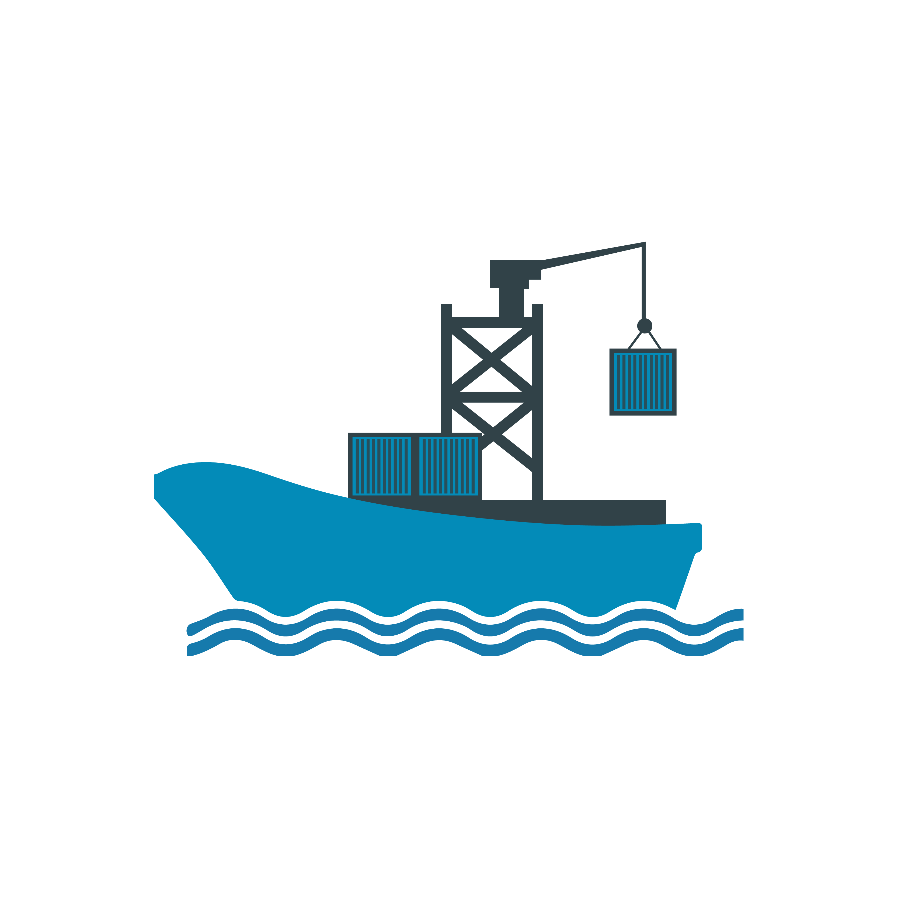

<nz-layout class="app-layout">
    <nz-sider class="menu-sidebar"
              nzCollapsible
              nzWidth="256px"
              nzBreakpoint="md"
              [(nzCollapsed)]="isCollapsed"
              [nzTrigger]="null">
      <div class="sidebar-logo">
        <a href="https://github.com/seacraft" target="_blank">
          
          <h1>Seacraft</h1>
        </a>
      </div>
      <ul nz-menu nzTheme="dark" nzMode="inline" [nzInlineCollapsed]="isCollapsed">
        <li nz-submenu nzOpen nzTitle="Dashboard" nzIcon="dashboard">
          <ul>
            <li nz-menu-item nzMatchRouter>
              <a routerLink="seacraft/welcome">Welcome</a>
            </li>
            <li nz-menu-item nzMatchRouter>
              <a>Monitor</a>
            </li>
            <li nz-menu-item nzMatchRouter>
              <a>Workplace</a>
            </li>
          </ul>
        </li>
        <li nz-submenu nzOpen nzTitle="Form" nzIcon="form">
          <ul>
            <li nz-menu-item nzMatchRouter>
              <a>Basic Form</a>
            </li>
          </ul>
        </li>
      </ul>
    </nz-sider>
    <nz-layout>
      <nz-header>
        <div class="app-header">
          <span class="header-trigger" (click)="isCollapsed = !isCollapsed">
              <span class="trigger"
                 nz-icon
                 [nzType]="isCollapsed ? 'menu-unfold' : 'menu-fold'"
              ></span>
          </span>
        </div>
      </nz-header>
      <nz-content>
        <div class="inner-content">
          <router-outlet></router-outlet>
        </div>
      </nz-content>
    </nz-layout>
  </nz-layout>
  